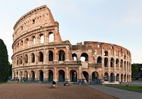

Stonehenge
Engeland
Rome
3100 v. Chr
Als je van een mysterie houdt is deze bezienswaardigheid zeker voor jou! Neem een kijkje naar de
begraafplaats die je uit je schoenen blaast. Hoe kregen ze ooit die stenen op elkaar gestapeld?
Ontdek het nu!
Lees Meer
Notre-Dame
 Frankrijk
Parijs
1345 n. Chr
Frankrijk
Parijs
1345 n. Chr
Ben je spiritueel, en bezoek je graag basilieken? Dan is de Notre Dame iets voor jou! Helaas is het
dak hier een tijdje geleden van afgebrand. Maar dit geeft het nog een extra vleugje historie. Je
bent welkom in hartje Parijs!
Lees Meer
Colosseum

Italië
Rome
80 n. Chr
Het colloseum, een amfitheater dat werd gebouwd tussen 70 en 80 na christus. Staat bekend over de
talloze dierengevechten met dieren die geen enkele kans hadden tegen de persoon ze moesten vechten.
Ontdek dit in hartje Rome!.
Lees Meer
Eiffel Toren
Frankrijk
Parijs
1887 n. Chr
De eiffeltoren is gebouwd voor de Wereldtentoonstelling. Het was een van de grooste monumenten. Nu
alleen nog in Parijs zelf de hoogste. Heb je geen hoogtevrees? Kom dan zeker af en ontdek Parijs van
bovenaf!
Lees Meer
Dom Van Keulen
 Duitsland
Keulen
1528 n. Chr
Duitsland
Keulen
1528 n. Chr
Als je echt veel van histor houdt, dan is deze plaats zeker voor jou! Er zijn hier zoveel
verschillende kerken geweest dat je er lang kunt naar luisteren. Neem zeker eens een kijkje! Het is
het echt waard! Ondek het nu!
Lees Meer
Schloss Schönbrunn
 Oostenrijk
Wenen
1713 n. Chr
Oostenrijk
Wenen
1713 n. Chr
Hou je van grote gebouwen en van de natuur? Dan ben je zeker hier op het juiste adres. Hier kun je een groot paleis bezoeken en ook de meest prachtige tuin. De natuur die er zich random bevind is gewoon adembenemend.
Lees Meer